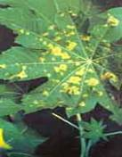

| Home |
| CASTOR |
mAJOR DISEASES |
| 1. Seedling blight |
| 2. Rust |
| 3. Leaf blight |
| 4. Brown leaf spot |
| 5. Powdery mildew |
| 6. Stem rot |
| 7. Bacterial leaf spot |
| 8. Wilt |
| Questions |
| Download Notes |
CASTOR :: MAJOR DISEASE :: LEAF BLIGHT
Leaf blight- Alternaria ricini
Symptoms
All the aerial parts of plants viz., leaves, stem, inflorescences and capsules are liable to be attacked by the pathogen. Irregular brown spots with concentric rings form initially on the leaves and covered with fungal growth. When the spots coaleasce to form big patches, premature defoliation occurs. The stems, inflorescences and capsules are also show dark brown lesions with concentric rings. On the capsules, initially brown sunken spots appear, enlarge rapidly and cover the whole pod. The capsules crack and seeds are also get infected.
|  |
Alterneria leaf spot with concentric rings |
Pathogen
The pathogen produces erect or slightly curved, light grey to brown conidiophores, which are occasionally in groups. Conidia are produced in long chains. Conidia are obclavate, light olive in colour with 5-16 cells having transverse and longitudinal septa with a beak at the tip.
Favourable Conditions
- High atmospheric humidity (85-90 %).
- Low temperature (16-20˚C)
Disease cycle
The pathogen survives on hosts like Jatropha pandurifoliaand Bridelia hamiltoniana. The pathogen is externally and internally seed-borne and causes primary infection. The secondary infection is through air-borne conidia.
Management
- Treat the seeds with captan or thiram at 2g/kg.
- Remove the reservoir hosts periodically.
- Spray mancozeb at 2kg/ha.